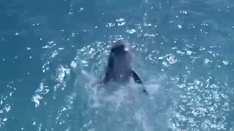

Los delfines (Delphinidae), también delfines oceánicos para distinguirlos de los platanistoideos o delfines de río, son mamíferos de una familia de cetáceos odontocetos muy heterogénea, que comprende 37 especies actuales. Miden entre 2 y 3 metros de largo, con el cuerpo fusiforme y la cabeza de gran tamaño, el hocico alargado y solo un espiráculo en la parte superior de la cabeza (orificio respiratorio que muchos animales marinos tienen como contacto del aire o agua con su sistema respiratorio interno).
Son carnívoros estrictos. Están entre las especies más inteligentes que habitan en el planeta. Se encuentran relativamente cerca de las costas y a menudo interactúan con el ser humano. Como otros cetáceos, los delfines utilizan los sonidos, la danza y el salto para comunicarse, orientarse y alcanzar sus presas; además utilizan la ecolocalización. Hoy en día, las principales amenazas a las que están expuestos son de naturaleza antrópica.
Por convergencia evolutiva su anatomía tiene mucha semejanza con el género extinto de reptiles marinos denominado Ichthyosaurus. Las especies pertenecientes a la familia Delphinidae poseen un cuerpo fusiforme, adaptado a la natación rápida. La aleta de la cola, llamada caudal, se utiliza para la propulsión, mientras que las aletas pectorales son usadas para el control direccional del nado. Los patrones básicos de coloración de la piel son tonos de gris, con mayor claridad en el vientre y rangos más oscuros en el lomo. A menudo se combina con líneas y manchas de diferente tinte y contraste.